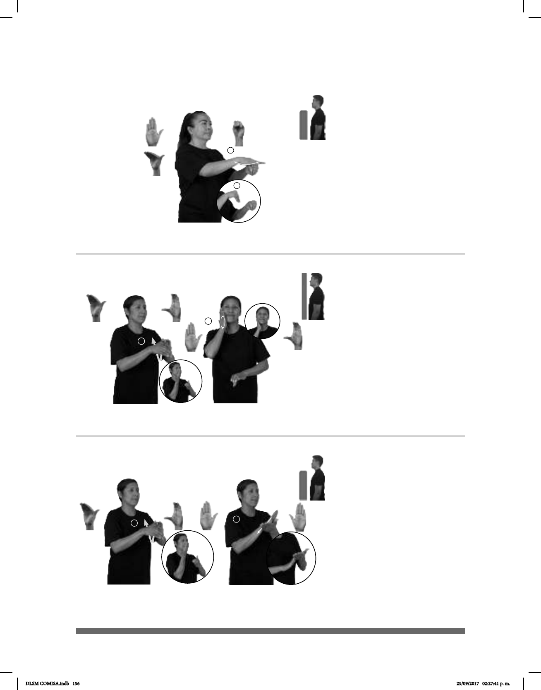

156
1
2
(B-P 137)
pos-MI MAMÁ USA CREMA-DE-COSMÉTICO
Mi mamá usa crema para la cara.
Seña: SC: I. y II. SB
I. MD B-P.8, MB C.3; II. MD
B-P.2, MB C.3
I. MD la palma inicia hacia abajo y
termina hacia arriba. MB palma hacia la derecha;
II. MD palma hacia la izquierda. MB palma hacia
la derecha.
I. MD y MB a la altura del pecho; II.
MD sobre la mejilla. MB a la altura del plexo.
I. La MD se mueve formando un
arco sobre la MD mientras el antebrazo gira y
cambia la orientación de la palma; II. La MD se
mueve formando círculos sobre la mejilla.
Simula la acción de aplicar
crema en la mejilla.
sust.f. Sustancia líquida o sólida,
espesa y grasosa, que sirve para suavizar o limpiar
la piel o para el tratamiento de pieles curtidas.
(B-P 136)
JOVEN
izquierda
HOMBRE CORTEJA-a-ella pos-SU NOVIO+MUJER
El muchacho corteja a su novia.
(B-P 138)
FRESAS CON CREMA pro-YO GUSTAR
Me gustan las fresas con crema.
Seña: SB
MD seña que pasa de
B-P.2 a B-P.7, MB S.1
MD palma hacia
abajo. MB palma hacia la
izquierda.
MD sobre los nudillos de
MB y se desliza hacia su
muñeca. MB a la altura del pecho.
Recto repetidamente.
v. tr. Tratar una
persona de que otra se enamore de
ella, diciéndole piropos, actuando con
mucha cortesía y consideración
hacia ella y cuidando la propia
apariencia.
Seña: SC: I. y II. SB
I. MD B-P.8, MB C.3; II. MD y
MB B-P.2
I. MD la palma inicia hacia abajo y
termina hacia arriba. MB palma hacia la derecha;
II. MD palma hacia abajo. MB palma hacia arriba
I. MD y MB a la altura del pecho; II.
MD inicia sobre el pulgar de MB y se desliza hacia
su lateral. MB a la altura del pecho.
I. La MD se mueve formando un
arco sobre la MD mientras el antebrazo gira y
cambia la orientación de la palma; II. MD recto
hacia la
derecha sobre la palma de MB.
sust. f. Parte grasosa y espesa de la
leche, con la que se hace la mantequilla y se usa en
la preparación de algunos platillos y postres.
DLSM COMISA.indb 156 25/09/2017 02:27:41 p. m.